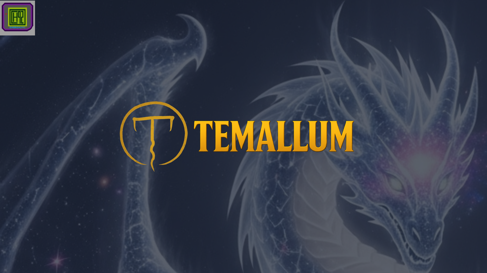

Índice.

Planetas hermanos. Caminantes del sueño. Magia lingüista. El Reino Onírico. Portales de barro y portales de sangre. Los Kurtnar. Los Oscuros. Reinos de Temallum. Planetas. Panteon | Especies. Personajes.
Una de las cosas que más disfruto al crear mi universo de fantasía es hacer una wiki privada en donde voy poniendo todas las cositas que conforman el universo de Temallum, y ahora al tener mi propia página, ¡tengo el agrado de compartirla con ustedes!
Antes de dejarlos seguir hacia la información que aloja esta sección me gustaría contarles dos cosas: el tono no va a ser de enciclopedia ni formal... ese no es mi estilo. Quiero que se imaginen que los invité a mi casa, que estamos tomando unos mates, comiendo algo rico, mientras les cuento los detalles de mi universo.
Y lo segundo es que en esta sección voy a usar imágenes generadas con inteligencia artificial. Mis habilidades artísticas son muy limitadas, me defiendo con el pixel art, pero no lo suficiente como para demostrarles los conceptos que quiero mostrar.
¡Sin más preámbulos los dejo seguir camino! ¡Sean bienvenidos a Temallum!

En el universo existen millones de planetas, cada uno con su encanto, pero entre todos los planetas existen cinco que son geográficamente iguales. ¿Qué quiere decir eso?
Quiere decir que si los vieras desde el espacio no tendrías forma de distinguirlos; solo cuando prestes atención a sus lunas o a pequeños brillos sutiles en el horizonte te darías cuenta de cuál es cuál.
Estos planetas son Temallum, Ustallum, Luptallum, Ektallum y Nissstallum. Cada planeta tiene sus razas, culturas y costumbres, su flora y su fauna únicas; solo descubrieron la existencia de los demás cuando algo ajeno a su planeta los visitó, pero eso es tema para otra historia.
Si te estás preguntando el porqué de esta extraña simetría, los estudiosos de estos mundos están en constante debate, sin llegar a una conclusión científica que satisfaga a todos. Tal vez la respuesta correcta sea simplemente que el Todo así lo quiso. Lo importante es que gracias a eso los kaerus lograron hacer su red de portales a lo largo de estos mundos, aunque hoy en día existen portales de barro en otros mundos también.
Arriba.Muchas veces cuando soñamos sentimos que lo que vimos fue real, un vistazo a algo que pasó o que está pasando. Para un Caminante del sueño —u Onirkir para los kaerus— eso es el pan de cada noche.
Los caminantes del sueño tienen una conexión única con el Reino Onírico: pueden viajar a conciencia a través de él, teniendo un sueño lúcido y en muchos casos muy fructífero. Para que tengas una idea de lo poderoso que puede llegar a ser, voy a ponerte un ejemplo.
Imaginate que querés aprender un tipo de arte marcial perdido, una disciplina oculta o tal vez un tipo de magia que escuchaste que practican en un lugar lejano. Un caminante del sueño simplemente tendría que soñar que es alguien con ese conocimiento y lo adquiriría por lo que llamamos "descarga onírica".
Existen tres tipos de caminantes del sueño... aunque algunos dicen que son cuatro.
La gran mayoría de los caminantes del sueño no conocen sus habilidades. Casi siempre creen que tienen mala suerte con los sueños, viendo cosas que no desean ver. Muchos terminan consumiendo medicamentos para dormir mejor; solo unos pocos son encontrados por un caminante del sueño experimentado que los guía.
La clase más común de todas. Los Pasras son caminantes del sueño con la capacidad de ver el pasado. Muchos de ellos son grandes magos y unos pocos logran dominar la técnica del "seudopresente", lo que les permite ver lo que está pasando en el momento con un retardo de unos diez o quince minutos.
Una pequeña minoría entre los caminantes del sueño logra ver lo que está pasando justo en el momento en que pasa. Eso les permite ser excelentes espías y estrategas de guerra, o protectores de quienes necesitan ocultarse. Esta clase de caminantes del sueño también tiene a sus prodigios: los videntes del sueño. Ellos logran un estado del sueño en el que consiguen ver el futuro —unos pocos minutos adelante— pero muchas veces ese pequeño vistazo de lo que vendrá ha salvado cientos de vidas.
Algunos estudiosos sugieren la existencia de un tipo de caminante del sueño tan poderoso que desafía toda lógica. Dicen que tendría el poder de ver el futuro tan lejos como quisiera, al igual que el pasado y el presente.
Esto lo haría un ser de un poder incalculable, pudiendo ser un guerrero de la luz con la fuerza suficiente para terminar con la maldad... o un agente de la oscuridad que la apague.
Otra cosa que teorizan los eruditos es que su etapa de Iniciado sería muy confusa y comenzaría a una edad muy temprana, mezclando los tiempos —pasado, presente y futuro—, dando como resultado sueños sin sentido y sin valor real... lo que también lo convertiría en un ser muy difícil de encontrar.
Arriba.El universo de Temallum se divide en dos planos. El Reino Material es el plano físico, donde la vida florece, donde todo lo que existe habita y donde la gran mayoría de las historias suceden. El otro plano es el Reino Onírico: este es el plano donde viven los dioses y el Todo, pero lo más curioso es que fuera de los terrenos de los dioses, la materia es moldeada por las mentes de los vivos en el plano material.
Uno de los ejemplos que me gusta dar es el de las pesadillas: los miedos de los vivos generan en el Reino Onírico entes que pululan por todo el plano, buscando a un soñador. Claro que ahora te estarás preguntando, "¿un soñador?". Cuando los vivos duermen se conectan con el Reino Onírico para poder descansar y soñar, es por eso que el Reino Onírico está en un cambio constante: lo que hoy fue, mañana no será.
En el Reino Onírico también descansan las almas de los vivos. Claro que estas están en una región aparte, protegidas por los dioses, pero al tener libre albedrío puede darse que se encuentren con una pesadilla, poniendo en peligro su existencia.
Uno de los secretos mejor guardados del Reino Onírico es que es ahí donde el Todo tiene capturada a la Nada, la madre de sus hijas. Dicen que cuando logre liberarse, el caos será terrible.
Arriba.Uno de los problemas que los magos resolvieron hace siglos es la barrera que había entre distintas civilizaciones en el primer encuentro, causada por la diferencia de lenguaje. Los mejores magos de Numayam lograron un encantamiento que permitía que el portador del objeto encantado pudiera entender cualquier idioma que escuchara y, a su vez, que cualquiera que lo escuchara a él pudiera entender su idioma.
Este encantamiento —que a día de hoy es lo primero que aprende un mago— logró que por mucho tiempo la paz reinara en Temallum. Hoy en día, toda prenda producida en Temallum sale a las tiendas con el encantamiento lingüístico.
Es prácticamente imposible que a día de hoy existan problemas diplomáticos por el idioma, ya que la cantidad de objetos encantados es inmensa. Dicen que algunos magos encantan piedras que encuentran por el camino con el encantamiento lingüístico, para que la gente que rodee la piedra esté bajo los efectos del encantamiento.
Arriba.Uno de los objetos más característicos de Temallum son los portales de barro. Esta invención kaeru funciona gracias a una magia única que ellos guardan con mucho recelo y que solo ellos conocen en su totalidad.
Hace miles de años los kaerus descubrieron que había puntos especiales que se interconectaban entre sí; gracias a los portales de barro se pueden cruzar distancias gigantes en un parpadeo. Con el tiempo descubrieron que esos puntos llegaban hacia otros planetas, y con gran facilidad lograron encontrar la forma de viajar a los planetas hermanos de Temallum.
Actualmente la tecnología de los portales de barro es tan impresionante que logran conectar con puntos sin un portal receptor. Gracias a eso, los estudiosos de las Islas Dragón investigan las culturas de las civilizaciones que consideran mágicamente inferiores, sin interferir con su desarrollo.
Cuando el reino de los elfos oscuros se levantó, los kaerus les negaron el acceso a la red de los portales de barro. Pero gracias al terrible poder que habían dominado, los elfos oscuros descubrieron la manera de reactivar los portales que tenían en su territorio; a partir de ese momento, y gracias a la magia oscura, los portales de sangre comenzaron a funcionar.
Originalmente los portales de sangre requerían el sacrificio de diez personas, y algo que los elfos oscuros tenían en abundancia en sus inicios eran esclavos: pobres seres que eran usados en todo tipo de experimentos impuros.
Hoy en día los elfos oscuros tienen un dominio único de las artes oscuras, a tal grado que lograron que la red de los portales de sangre funcione con la energía generada por el sufrimiento de todos los seres vivos del planeta. Puede que esto suene terrible, pero quiero que comprendas la evolución real de esto: un ciervo siendo cazado por un lobo genera el sufrimiento suficiente como para que un portal esté activo por horas, y en un mundo tan vivo como Temallum la energía del mundo animal siempre está disponible.
Arriba.Hace siglos la Oscuridad creó uno de los males que aterroriza al Reino Material hasta el día de hoy: los Kurtnar.
Realizando un ritual tan terrible que es preferible no contarlo, la Oscuridad corrompió a los habitantes originales del planeta Rekhuk, los kimerios, modificándolos en contra de su voluntad de tal manera que transformó su cuerpo y su alma. Mantenían rasgos de su antigua forma, como un pico con dientes, orejas similares a las de un zorro y una gran habilidad con la magia, pero al ser convertidos en Kurtnar la Oscuridad impregnó a su progenie impura con características propias de ella: una piel cubierta de escamas negras y unos ojos amarillos penetrantes.
Una de las características más importantes de los Kurtnar es que no pueden reproducirse por medios convencionales. Para expandir su raza necesitan de víctimas a las cuales someter al mismo ritual con el que fueron convertidos. Es por eso que un Kurtnar no nace, se crea.
La forma física de un Kurtnar depende de dos factores: su raza original y la raza de su "progenitor", entendiendo como progenitor a quien realice el ritual para transformarlo. Pero lo que comparten todos son las escamas negras que les sirven como armadura biológica.
Los Kurtnar tienen una jerarquía basada en el poder. El más poderoso de todos es Fobertok, el rey oscuro de Rekhuk. Fobertok necesitaba tener en quiénes confiarle la tarea de conquistar el Reino Material, es por eso que secuestró a cinco seres provenientes de los planetas hermanos y, realizando un ritual impuro, los convirtió en Kurtnar únicos, con poderes que desafían toda lógica.
A Basnut de Temallum, la Rana, le dio el don de sanar cualquier herida, indispensable para mantener a los soldados sanos y fuertes. A Ranut de Ustallum, la Serpiente, le dio el don de la transmutación, con el que convertía a los soldados en armas biológicas. A Vaskith de Luptallum, el Lobo, le dio el don de la caza, convirtiéndolo en el asesino más mortífero del Reino Material. A Deipek de Ektallum, el Dragón, le dio el don de la conquista, convirtiéndolo en el general supremo de la milicia Kurtnar. Y a Aj-sssak de Nissstallum, el Buitre, le dio el don de la nigromancia, para que los enemigos caídos les sirvan en su causa.
Algo que no estaba en los cálculos de Fobertok es que cuando sus hijos intentaran propagar la especie, su progenie quedaría con una conexión con la oscuridad incompleta. Esos "casi Kurtnar" mantenían independencia en su pensamiento, convirtiéndose en muchos casos en enemigos del Imperio.
Es por eso que Fobertok les ordenó a sus hijos que solo conviertan a quienes estén dispuestos a "mejorar su ser". Cada comandante tomó una estrategia única para propagar su esencia: algunos, como Ranut, se aprovecharon del dolor prometiendo una solución para algún mal; otros, como Vaskith, crearon una cultura que gira en torno a la caza y al honor.
Arriba.Algo que puede confundir a muchos es que el hecho de que un ser sea parte de "los Oscuros" no lo hace intrínsecamente malo. Claro que... la gran mayoría lo son, pero hay excepciones.
Al buscar el conocimiento oscuro, por codicia o por poder, el usuario de la magia oscura empieza a transitar un camino que modifica su carne y su alma. Llega un punto en el que el cambio es tan grande que deja de ser parte de su raza o especie original y se convierte en una subespecie. El ejemplo clásico es el de los elfos oscuros.
Pero es muy importante destacar que los descendientes de este "Oscuro" van a mantener las modificaciones genéticas de su ancestro, pero su alma no va a estar manchada por la oscuridad. Un ejemplo clásico son los elfos oscuros de las Islas Dragón, como Anok Niwik: seres que buscan una vida tranquila, pero que seguramente asustarían a más de uno si los encontraran caminando frente a sus casas de noche.
Arriba.En Temallum existen muchas naciones, reinos, aldeas y toda clase de grupos de seres que viven en comunidad. En esta sección nos vamos a concentrar solamente en los seis reinos que más se nombran en las historias.
Antes de seguir, me gustaría contarles que los reinos, al igual que los países de nuestro mundo, tienen toda clase de ecosistemas y paisajes. Es por eso que no voy a aclarar la parte "estética" de cada reino; para eso están las historias.
El reino de los elfos es el más antiguo de todos, fundado por los primeros kaldayan que visitaron Temallum. El reino de Fadamur está ubicado en donde en nuestro mundo se encontraría el Medio Oriente.
Fadamur está rodeado por un gran muro encantado que impide entrar a todo aquel sin autorización. Una de las características más... particulares de Fadamur es que está dividido en dos secciones: la interna y la externa.
La familia real vive en un castillo en el centro del reino. Aparte de la familia real, solo entran los sirvientes reales y la guardia del rey.
Megalos Likos es el rey de Fadamur. Muchos dicen que fue el primer elfo en nacer y que, por lo tanto, su padre fue un kaldayan... aunque muchos otros creen que eso es un invento del rey.
La mano derecha del rey es su amada esposa, Lilith Likos, quien se encarga de la seguridad del reino y de comandar las fuerzas militares. Muchos dicen que su dominio de la espada es tal que una vez cortó al viento con su sable.
La princesa Ergatis Likos, la única hija de los reyes, tiene la tarea de velar por el bienestar de los altos elfos. Cuando la princesa cumplió la mayoría de edad, el rey le ordenó que llevara una máscara cada vez que saliera de sus aposentos. Desde entonces, nadie más que sus padres y sus sirvientes conoce el rostro de Ergatis.
Los altos elfos son los que tienen la genética de los kaldayan más pura; ellos son la clase alta, los que habitan la zona interna de Fadamur y, según ellos, los únicos dignos del título de Fadamitas. Al vivir en la zona más cercana al castillo del rey, cuentan con todos los beneficios de las clases altas, pero también tienen la obligación de gobernar la zona exterior... cosa que poco les interesa.
En honor a la princesa, los altos elfos usan una máscara cada vez que hay un encuentro social. No usarla es considerado una traición al rey, aunque no es una ley oficial ni tiene pena: simplemente el infractor es echado del lugar y obligado a colocarse su máscara si quiere volver a ingresar.
Los habitantes de la zona externa son llamados por los altos elfos "los bajos", aunque este nombre es despectivo y no es usado por los propios habitantes de las zonas externas.
En las zonas externas se ocupan de la producción de alimentos. Si los comparáramos con la Tierra, ellos son la clase media o baja de Fadamur, pero a diferencia de la Tierra, los elfos tienen garantizadas las necesidades básicas, porque después de todo los elfos descienden de una raza de guerreros de la luz.
Una de las curiosidades más llamativas de los bajos elfos es que están obsesionados con las modas de la Tierra. Es por eso que si pudieras visitar un barrio de la zona exterior, no te tendría que extrañar ver a algún elfo vestido con ropa de los años 80.
El reino de los elfos está protegido por los más letales guerreros, entrenados en el arte de la guerra y dispuestos a dar la vida por el rey. Muchos dicen que para ser miembro de la guardia negra hay que tener un alto porcentaje de genes kaldayan activos.
A los mejores soldados de la guardia negra se les concede el honor de ser parte de la guardia del rey. Dicen que esos soldados tienen tanta genética kaldayan que sus pupilas son rasgadas.
⬆️Aunque algunos llaman a Numayam "el reino pantano", la realidad es que es una nación, porque no hay un rey ni una figura de autoridad única. En Numayam, todo ser que tenga la luz en su corazón es bienvenido; eso quiere decir que un kaeru puede tener de vecino a un orco, a un humano o a cualquier especie que se te pueda ocurrir.
Si tuviéramos que ubicar a Numayam en un mapa de la Tierra, esta nación se ubicaría donde en nuestro mundo está Argentina.
Numayam es una democracia absoluta, lo que quiere decir que toda decisión importante es sometida a votación y, lo más importante, todos los ciudadanos votan, sean kaerus o no.
Para llevar a cabo lo que se decide en las votaciones existe el Gran Consejo de Numayam, administrado por los Tres Grandes.
Dekiru, el gran druida, se encarga de la seguridad de la nación y, de ser necesario, de las fuerzas militares.
Bosuki, el parlanchín, se encarga de la administración general. Se podría decir que es lo más parecido a un presidente, pero sin el poder que tendría uno.
Kumizu, la luz de Numayam, se encarga de la salud y la educación. Ella fue la primera en abrirle las puertas a los humanos.
⬆️Seguramente te resultará curioso este nombre, pero te voy a contar rápidamente por qué se llama así. En la época de las conquistas, un grupo de piratas cruzó un portal de barro que encontraron en donde hoy están las Islas Malvinas.
Cuando lo cruzaron se encontraron con los kaerus que habitaban la isla, quienes con recelo les mostraron las maravillas del lugar. Los piratas vieron esto como una oportunidad única para generar riquezas, es por eso que la capitana, Victoria Godoy, ordenó a sus hombres que volvieran por sus familias y, en lo posible, consiguieran más hombres para ensanchar sus filas.
Después de muchas idas y venidas lograron ganarse la confianza de los kaerus. Gracias a esa confianza pudieron comprarles un navío para recorrer los mares en busca de un lugar para instalarse. Si bien las estrellas no les servían de guía, al tiempo de navegar se dieron cuenta de que el mundo en donde estaban era un reflejo idéntico de su mundo de origen.
Pasaron algunos meses navegando y, con mucho esfuerzo, llegaron a Europa... o donde en nuestro mundo se encuentra Europa. En ese lugar levantaron el primer asentamiento humano, al cual llamaron Nueva España: un poco por nostalgia y otro poco como burla.
Una de las primeras cosas que notaron era que les era imposible hacer magia como lo hacían los kaerus, pero sus nuevos vecinos les explicaron que en este nuevo mundo la magia era indispensable para sobrevivir.
Como el chamanismo es en esencia usar la magia de los elementos, algunos humanos lograron, con mucho esfuerzo, dominar las artes chamánicas, pero seguían siendo muy inferiores a las razas de Temallum.
Unos años después de levantar la bandera de Nueva España, los humanos encontraron unas extrañas ruinas. Para su suerte o su desgracia, esas ruinas eran los restos de un antiguo templo en honor a Aj-sssak. En el lugar encontraron un extraño libro escrito, un libro que contenía los secretos de los nigromantes de Nissstallum...
Los humanos devoraron el conocimiento del libro y, después del sacrificio de muchos animales, lograron dominar el arte de la nigromancia, pero siempre con un código que no se debía romper: nunca sacrificar la vida de un ser sintiente. La nigromancia debía ser un arte para defenderse, no un arma para conquistar.
Quien un día fue Victoria Godoy, hoy es conocida como Victoria Necrox. Gracias a la nigromancia ganó un poder sin igual, pero también, al abusar de ella, se convirtió en una no-muerta... cosa que le permite seguir gobernando hasta el día de hoy.
Victoria es una gobernante justa y amada por todos los humanos, pero odiada por las demás naciones, ya que según ellos fue su culpa que Temallum volviera a una época de oscuridad.
Quien en el principio de Nueva España fue el encargado de traer más humanos a Temallum para tener una población decente, hoy en día se encarga de que las órdenes de Victoria se lleven a cabo. A nuestros ojos, es más un secretario de estado que un gobernador.
Si bien su dominio de la nigromancia es muy inferior al de Victoria, fue lo suficientemente bueno para convertirse en un no-muerto.
La defensa de Nueva España está a cargo de los lobos negros. Están equipados con "tecnología de punta terrestre": armas que consiguen en el mercado negro de la Tierra, cambiadas por oro y diamantes que generan con magia en Temallum.
Los lobos negros tienen un entrenamiento riguroso y están a la altura de cualquier armada de la Tierra. Incluso son superiores en muchos aspectos; después de todo, tienen la magia como arma.
Puede parecer contradictorio que una nación que usa la nigromancia como arma y escudo tenga iglesias, pero para Nueva España son fundamentales.
Los ciudadanos son muy devotos: siguen las costumbres católicas que sus ancestros trajeron de la Tierra, van a misa los domingos, ayudan a sus hermanos.
Después de todo, el humano siempre es un ser contradictorio y extraño.
⬆️La gran aldea de los orcos es un territorio que ellos guardan con mucho recelo, ubicada donde en la Tierra se encontraría Estados Unidos.
Los orcos tienen una cultura centrada en el cuidado de la naturaleza y en el honor de los individuos. Para los orcos, todos son hermanos y toda vida tiene valor.
Si bien se permite cazar, es una práctica que se realiza de forma ritualística, para conectarse con el depredador que se lleva adentro.
Para ingresar en su territorio es obligatorio tener permiso; sin este permiso se declara al invasor como "invasor ejecutable"...
Para gobernar la gran aldea hay que ser el orco más poderoso, y Agunki es un chamán excepcional. Se cuenta que tiene tanto poder que cuando los elfos oscuros intentaron invadir Nogunkot, él solo los convirtió en cenizas con el poder de un volcán.
Él se encarga de que los orcos vivan tranquilamente, sin preocuparse de los problemas del exterior.
El segundo al mando es Daichiki, un guerrero excepcional que guía a todo orco que quiera seguir el camino del guerrero. Puede sonar contradictorio que una raza que valora la vida se prepare para la guerra, pero al igual que pasa en nuestro mundo, si querés paz tenés que estar preparado para la guerra.
Algunas veces, cuando se dan conflictos de territorio, él es el primero en llegar al lugar. Muchas veces su presencia es suficiente para acallar los problemas...
⬆️Ubicado en donde en la Tierra está Australia.
Cuando el rey elfo se enteró de que los humanos estaban practicando las artes oscuras, le ordenó a Lucius Lycan —su hermano, quien ya había tenido contacto con los humanos y tenía una buena relación con Victoria Godoy— que fuera a Nueva España para disuadirlos de estudiar las artes oscuras.
Lamentablemente... la historia fue otra.
En cuanto Lucius llegó a Nueva España, los humanos le dieron una cálida bienvenida. Los humanos amaban a Lucius y le tenían una confianza ciega.
Al ver la práctica de las artes oscuras en funcionamiento, Lucius sintió una curiosidad voraz. Junto con siete nigromantes humanos estudió el templo de Aj-sssak en busca de algún conocimiento que ellos no hubieran encontrado.
Debajo de unos escombros que los humanos no pudieron levantar por falta de fuerza, Lucius encontró una tablilla que citaba un ritual que, a través del sacrificio de siete almas, le daba al mago un poder único, prometiéndole el dominio absoluto de la magia negra.
Sin pensar en las consecuencias y guiado por una sed de poder que Lucius desconocía tener, llevó a cabo el ritual, sacrificando a los humanos que antes había considerado sus amigos.
Después de eso se convirtió en el primer elfo oscuro en mucho tiempo. Al enterarse, el rey de Fadamur lo desterró a las tierras malditas... tierras a las que Lucius rebautizó como Musraktar.
La sed de poder llevó a Lucius a expandir su territorio. En una de las tantas aldeas orcas que conquistó, encontró a una orca encadenada. Sintiendo el dolor en su corazón, la sedujo con la posibilidad de unirse a él para llevar la oscuridad a todo Temallum y a los mundos hermanos.
La orca, llena de dolor y odio en su corazón, aceptó su propuesta, convirtiéndose en la primera orca oscura de la historia. Hoy en día sigue siendo la mano derecha de Lucius en el gobierno y fue la responsable de la modernización de Musraktar.
Cuando Lucius pasó al lado oscuro, fueron muchos los elfos que sintieron el llamado y se unieron a él en Musraktar, jurándole lealtad. Fue el mismo Lucius quien los entrenó en las artes oscuras, convirtiéndolos en elfos oscuros. Aunque sus filas se ensanchaban, no eran suficientes para poder llevar adelante sus planes de conquista.
Al ser los nigromantes más poderosos de Temallum, reanimaban a sus enemigos convirtiéndolos en esclavos eternos: zombis sedientos de sangre que servían a los elfos oscuros.
Después de años de guerra, las naciones de Temallum lograron derrotar a los zombis de Musraktar, obligando a Lucius y a los suyos a firmar un acuerdo de paz con sangre.
Este acuerdo les prohibía realizar sacrificios de seres sintientes, pero les dejaba seguir siendo lo que eran. Después de todo, una vez que un ser se convierte en un Oscuro, no hay vuelta atrás.
⬆️Ubicadas en donde en la Tierra están las Islas Malvinas.
Una de las pocas cosas buenas que dejó la guerra de Musraktar es el nacimiento de una nueva nación soberana.
Si bien un mago puede realizar magia sin ninguna herramienta, muchos prefieren un báculo para potenciar sus habilidades. Un báculo se compone de dos partes: el bastón, que puede ser de cualquier material —para que tengas una idea, si el mago es hábil con la espada, el "bastón" puede ser la espada misma— y el cristal mágico o piedra de Basnut, que es la que le da las propiedades mágicas al objeto, potenciando las habilidades del mago.
Seguramente te estarás preguntando: "¿y esto qué tiene que ver con Musraktar y las Islas Dragón?" La respuesta es simple: Musraktar necesitaba cristales mágicos para potenciar los poderes de sus nigromantes.
Lucius le encomendó a algunos de sus elfos oscuros que fueran a las Islas Dragón para conquistarlas y explotar sus recursos naturales. Como te imaginarás, la piedra de Basnut era muy abundante en la isla.
En cuanto llegaron, los kaerus los recibieron con los brazos abiertos. Los elfos oscuros dudaron en seguir sus órdenes; después de todo, el deseo de conquista era de Lucius, no de ellos.
Para no alargar la historia, se libraron algunas batallas que siempre terminaban en la retirada de los elfos oscuros, ya que ellos no querían matar a los kaerus y los kaerus no querían matar a los elfos oscuros.
Después de esas "batallas", los elfos oscuros y los kaerus llegaron a un acuerdo de convivencia que terminó en una unión completa entre sus pueblos.
Como la cultura de los kaerus de la isla se centra en todo lo que rodea a los portales y en la exploración y estudio de otras culturas, adoptaron el mismo método de gobierno que tenemos en la mayoría de los países de la Tierra: una vez cada cuatro años eligen a sus gobernantes — presidente, gobernadores, senadores, diputados... Curioso, pero así es.
Una de las principales actividades de las Islas Dragón es la investigación de las culturas de todas las especies sintientes. Es por eso que existen los Departamentos de Investigación o D.I.X. El que investiga la Tierra es el D.I.T., Departamento de Investigación Terrestre.
Cada departamento cuenta con portales de barro de última tecnología con los cuales investigan y replican la tecnología de otros planetas. En otras palabras, si querés ir a Temallum, las Islas Dragón van a ser el único lugar donde vas a tener disponible un televisor para ver tu programa favorito.
⬆️En el universo de Temallum existen una infinidad de planetas, pero hoy nos vamos a centrar en los principales, en aquellos en donde transcurren las historias y los mitos.
Es importante decir que no voy a dar una explicación detallada de cada planeta, porque como te imaginarás, contarte todo de cada planeta requeriría muchísimo tiempo. En vez de eso prefiero darte un vistazo a cada planeta y contarte los detalles que creo interesantes, para que cuando empieces a leer una historia puedas imaginarte en qué lugar está pasando.
El planeta de la luna azul es el más bello de los planetas hermanos y también el único que no está gobernado por los Kurtnar, ya que Basnut dejó el Imperio.
También es el planeta con más portales, ya que los kaerus los estudian activamente. Lo curioso es que también es el único que tiene templos de todos los comandantes Kurtnar.
Un último dato curioso: es el planeta con más razas sintientes habitándolo, aunque los únicos autóctonos son los kaerus.
⬆️¿Qué te podría decir de la Tierra que no conozcas?
Solo puedo contarte dos cosas. La primera es que Ustallum, alias la Tierra, es gobernada en secreto por Ranut, la Serpiente...
Lo segundo es que los humanos no somos originarios de la Tierra; ese título lo tiene la raza a la que Ranut pertenece, los Nokzet. Hoy en día están aislados en las profundidades de la Tierra. Hay quienes dicen que Ranut los protege, alejándolos de la oscuridad del Imperio; otros dicen que los mantiene cautivos y en continuo martirio mientras se regocija de su dolor... la verdad es un misterio.
El planeta de la luna roja. Luptallum es donde el Imperio entrena a sus asesinos, los gukden licántropos. Tienen una cultura ligada a la caza y al honor que esta conlleva. Una práctica que para nosotros es poco honorable pero para ellos es fundamental: el ciclo del Lupdakma.
El Lupdakma comienza cuando un licántropo se infiltra en otro planeta buscando a un "guerrero digno", un ser de habilidades de combate excepcionales. Cuando lo encuentra, lo lleva a Luptallum en contra de su voluntad. Si el sujeto es digno logra escapar y se le da la oportunidad de unirse a la manada, pero si no lo logra... es devorado por la manada.
Algo curioso de este planeta es que todavía hay pequeñas aldeas de Lupbarn, los habitantes nativos de Luptallum: licántropos sin la corrupción Kurtnar.
⬆️Una de las cosas más curiosas de Ektallum es que es el único de los planetas hermanos que no tiene luna. En vez de eso tiene anillos similares a los de Saturno... pero mucho más chicos, claro.
Este planeta es el centro militar del Imperio. Los soldados son entrenados por el mismísimo Deipek y comandados por los gukden drakonianos, seres imponentes pertenecientes a la raza a la cual pertenece el Comandante Dragón, los Drakónidos... aunque para algunos se parecen más a unos cocodrilos humanoides.
Deipek tiene prohibido el ingreso de los humanos a sus filas. La razón es muy curiosa: hace siglos, cuando Ranut gobernaba abiertamente la Tierra, en donde ahora está Egipto, los esclavos humanos se levantaron en armas contra la Serpiente. Fue tal la fuerza que Ranut tuvo que pedirle ayuda a su hermano.
El Cocodrilo —el apodo que los humanos le pusieron a Deipek— y sus hijos frenaron sin mucho esfuerzo a los humanos, capturando a los mejores para engrosar sus filas. Pero entre todos había un humano que sobrepasaba a los demás en odio y rencor. El mismo Deipek lo llevó a rastras por el portal que conducía a Ektallum.
Al convertirlo le arrebató el nombre y lo apodó simplemente como "El Soldado". Por siglos fue leal a los Kurtnar, peleando lado a lado con sus hermanos Gukden... hasta que un día se levantó contra ellos para proteger a los indefensos. Desde ese día Deipek declaró a la raza humana como especie no grata para las filas de los Drakonianos.
⬆️El planeta gobernado por Aj-sssak es muy curioso: es el único planeta habitado enteramente por no-muertos. Plantas, animales y "personas", todos pertenecen a esta extraña condición.
Para que el sol no carbonice a sus hijos, Aj-sssak destruyó la luna que orbitaba Nissstallum, convirtiéndola en una nube de asteroides que se mantienen en órbita gracias a los encantamientos oscuros del Buitre.
Algo muy curioso de este planeta es que los cielos brillan con un color violeta vibrante y hermoso durante el día.
En Nissstallum "viven" los hijos de Aj-sssak, los gukden Mut-ten, los mejores nigromantes del Imperio. Ellos se encargan de levantar a sus enemigos caídos para aumentar las filas del Imperio. Se cuenta que un solo Mut-ten puede conquistar por sí solo civilizaciones enteras, asesinando y resucitando enemigos desde las sombras.
Antes de que Aj-sssak conquistara Nissstallum para el Imperio, el planeta era habitado por la raza a la cual pertenece el Buitre, los Gammdor. Aunque ya no queda ninguno vivo en el planeta, algunos lograron escapar a Temallum, pero la mayoría son parte de las filas de los Mut-ten.
⬆️El corazón del Imperio Kurtnar, gobernado por Fobertok. En algún momento era habitado por una raza llamada los kimerios, pero eso quedó en el pasado hace muchos años. Ahora las banderas con el símbolo del cuervo flamean en todo el planeta.
Este es el planeta del que se tiene menos información; el Imperio Kurtnar mantiene un hermetismo absoluto.
⬆️El planeta natal de los kaldayan. Layan es un planeta lleno de luz y esperanza, sus naciones viven en completa armonía.
Algunos kaldayan se entrenan para ser guerreros, otros para ser eruditos, pero todos tienen como objetivo proteger a la Luz.
⬆️En el universo de Temallum existe todo un panteón que se ocupa de mantener el orden... dentro de lo posible, en el Reino Material.
Es el dios primordial, creador del Reino Material y del Reino Onírico. Su existencia, y todo lo que representa, es imposible de explicar en lenguajes mortales. Si bien es energía en estado puro, cuando elige tomar forma física adopta la apariencia de un dragón.
La hija menor del Todo. Es una deidad benevolente; su corazón solo tiene lugar para el amor y siempre intenta ayudar a los mortales... aunque hoy en día está menos presente en el Reino Material en comparación con la época antigua.
La hija mayor del Todo. Aunque en un principio también fue una deidad benevolente, la envidia hacia su hermana —adorada por los mortales— fue enfriando su corazón y llenándolo de odio. Pero lo que terminó de ennegrecer su alma fue una noche en que intentó ayudar a un infante de una especie antigua, y el niño le gritó: "¡Monstruo! ¡Luz, protégeme de este monstruo!"
El Todo creó un dios por cada sentimiento, concepto y raza de los mortales, para que se encarguen de mantener el equilibrio en el Reino Material. Es importante entender que su función es sostener el equilibrio sobre todas las cosas: no están limitados por códigos morales humanos. ¿Qué quiere decir esto? Que si un dios se encarga de proteger a los niños y alguien intenta dañarlos, y un ángel está cerca... el impuro será exterminado sin dudar.
Los dioses menores son seres de energía pura, lo que significa que no pueden manifestarse directamente en el Reino Material. Para intervenir, eligen a mortales que los representen, otorgándoles poderes incomprensibles y transformando sus cuerpos al estado angelis. ¿Qué quiere decir esto? Que un ángel posee fuerza, velocidad y resistencia sobrenaturales, y además cuenta con alas. En otras palabras, un ángel es un superhéroe en el universo de Temallum.
Arriba.